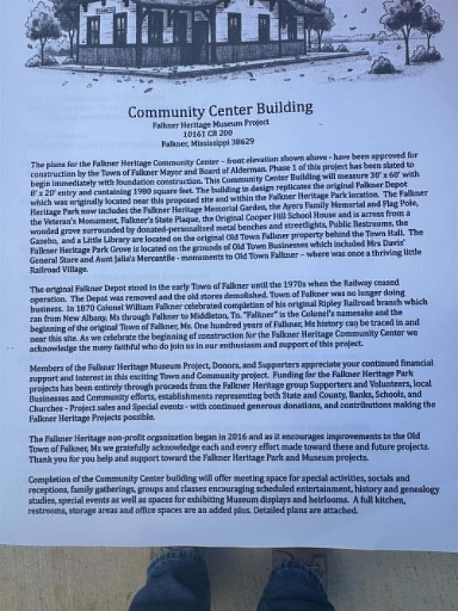

- Footprint
- 30′ × 60′Plus an 8′ × 20′ entry
- Heated floor space
- 1,980 sq ftUnder roof, conditioned
- Status
- Phase 2Framing & roofing estimates welcome
- Approved by
- The TownMayor & Board of Aldermen
Room enough for the whole town
Completion of the Community Center will give Falkner a place for special activities, socials and receptions, family gatherings, groups and classes, scheduled entertainment, history and genealogy studies, and special events — as well as space for exhibiting museum displays and heirlooms.
- A large gathering room for Town and Community socials, special events, and museum displays
- A spacious meeting room for groups, classes and study
- A full-sized kitchen to accommodate community gatherings and festive receptions
- Restrooms and generous storage spaces
- Office space for the Heritage Museum Project

Built one phase at a time, as the money comes in
Proceeds from project events, generous donations, contributions and gifts fund this work. Nothing is borrowed and nothing is assumed — each phase begins when it is paid for.
-
Phase 1 — Complete
Foundation & Slab
Funding through generous donations was allocated for Phase 1 of this project, which includes the foundation and slab. The slab has been poured and the site is ready for framing.
-
Phase 2 — Estimates open
Framing & Roofing
Phase 2 begins now that the foundation is complete. The scope includes conventional framing, architectural shingles, and windows and doors. The Town of Falkner welcomes estimates.
-
Ahead — Funding needed
Completion & Fit-out
Continued funding resources will be needed for further construction to finish the building — interior work, the kitchen, restrooms and mechanical systems — and to open the doors.
Now taking estimates for Phase 2
The Town of Falkner is accepting estimates for framing and roofing, including windows and doors, conventional framing, and architectural shingles.
The Community Center plans are approved for construction and are available for viewing at the Town Hall.
To see the plans or submit an estimate:
Or view the plans in person at the Town of Falkner Town Hall.
Because one stood here, and the town was built around it
The original Falkner Depot stood in the early Town of Falkner until the 1970s, when the railway ceased operation. The Depot was removed and the old stores were demolished.
In 1870, Colonel William Falkner celebrated the completion of his original Ripley Railroad branch, which ran from New Albany, Mississippi, through Falkner, to Middleton, Tennessee. “Falkner” is the Colonel’s namesake, and the beginning of the original Town of Falkner. One hundred years of Falkner history can be traced in and near this site.
The new building will not be the Depot. But it will stand in its place, in its shape, doing what the Depot did — giving the town somewhere to meet.
A word of thanks
Many thanks to all of you who have been, and continue to be, a part of this project. Without your continued support we fall short of our goal to complete the Falkner Heritage Community Center.
We believe this project is valuable to the wellbeing of the Town of Falkner, the community, and our next generation. We also believe that the generosity of the people of Falkner can bring this project to completion.
The Falkner Heritage Museum Project group members, volunteers, supporters, Town and Community folks, County and State, Friends and Families of Falkner, Mississippi encourage you to send your generous donations toward the completion of the Falkner Heritage Community Center Project.
Funding for the Falkner Heritage Park projects has come entirely through proceeds from the Falkner Heritage group’s supporters and volunteers, local businesses and community efforts, establishments representing both State and County, banks, schools and churches, project sales and special events — with continued generous donations and contributions making the Falkner Heritage projects possible.
“May our Lord continue to direct us as we strive to make Falkner, Mississippi a memorable spot in North Tippah County, and make you proud to be from Falkner, MS.”
Falkner Heritage · PO Box 113 · Falkner, MS 38629
Every gift, of any size, goes directly into the building. Checks may be made to Falkner Heritage and mailed to the address above.
The original project announcement
